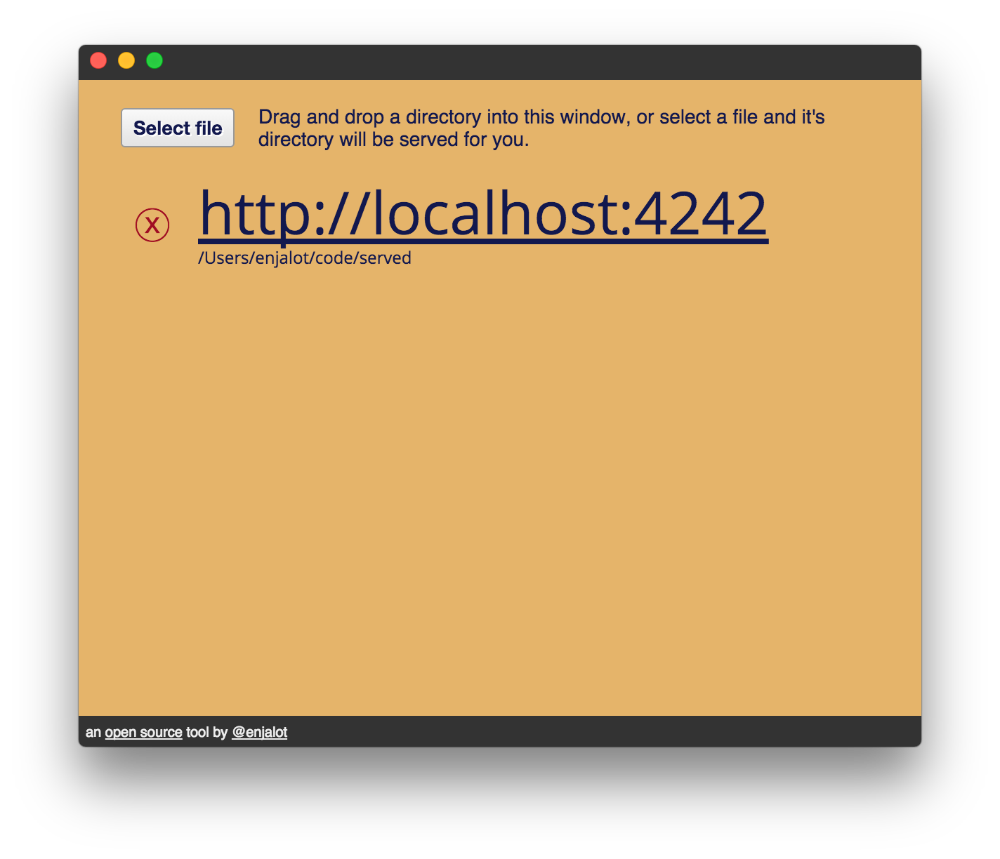

Served
A simple utility for serving up directories with an HTTP server.
The motivation is to give people a way to start using d3.js without dealing with the command line.

When you are just getting started with web development, dealing with the command line can waste a lot of energy when
you'd rather be writing some JavaScript and trying out some sweet d3 functions on your data. Just drag-and-drop the folder
that has your d3 code and click the link that comes up!

an open source tool by @enjalot